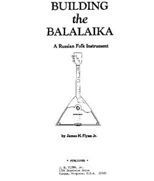

 Второго октября 2010 года президент США
Барак Обама продлил запрет на продажу балалаек в США до 2020 года. История
вопроса восходит еще к предвоенному времени, когда тогдашний глава
вашингтонской администрации Франклин Рузвельт подписал секретный указ о
запрете балалаек на территории страны сроком на 10 лет. Это случилось в 1940
году. С тех пор декрет регулярно продлевается. С 2000 года указом Клинтона
запрет распространен и на Аляску, которая являлась единственным местом, где
продажа была разрешена. Балалайка на Аляске считается народным музыкальным
инструментом. Во времена Рузвельта эти земли еще не имели статуса штата,
поэтому запрет удалось обойти, благодаря лазейкам в законодательстве.
Причиной запрета формально стал тот факт, что балалайка запрещена в
России православной церковью и государством ибо "позволяет глумиться над
властью". См. подробнее по ссылке. Фактически, в тогдашнем СССР запрет был
уже снят. А вот православную церковь как раз и запретили. Рузвельт был прав
в одном - этот инструмент реально опасен для власти, поскольку может
использоваться в качестве "мягкой силы".
В наши дни запрет сохраняется в неполной форме. Играть на балалайке не
запрещено, хотя для этого нужно иметь специальную лицензию. Не допускается
массовая продажа этого инструмента и промышленное изготовление. Одиночные
частные продажи разрешаются. Вот поэтому Книга Дж. Флинна "Как изготовить
балалайку", увидевшая свет в 1984 пользуется фантастической популярностью и
выдержала уже 9 переизданий. Для простого американца, желающего насладиться
звуками балалайки, нет иного пути, как изготовить ее самому. А купить
балалайку в магазине будет невозможно, по крайней мере, еще десять лет.
Юрий Шимановский, специально для "Комсомольской Правды".
Назад|На главную